8.将一给定的平方数，分为另外两平方数之和[1]
例如给定的平方数为16．
设第一个平方数为x2，则另一个平方数为16-x2．
令[2]16-x2=（mx-4）2，其中m为整数，4为16的平方根．取m=2，有16-x2=（mx-4）2．
于是4x2-16x+16=16-x2，
即5x2=16x，得x=16/5．
因此所求的两个平方数分别为256/25，144/25．
9.将一给定数，此数为两平方数的和，分为另外两个平方数的和[3]．
给定数13=22+32．
因为这些平方数的根分别为2，3，令第一个平方数为（x+2）2，第二个平方数为（mx-3）2（其中是m整数），不妨取（2x-3）2．
因此（x2+4x+4）+（4x2+9-12x）=13，
即 5x2+13-8x=13．
因此x=8/5，从而所求平方数为324/25，1/25．
10.求两个平方数，使其差为给定的数．
给定差为60．
其中一个平方根为x，另一个平方根为x加上任意一个其平方不超过60的数，不妨取为3．
因此 （x+3）2-x2=60；
x=
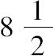
，得所求平方数为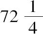
，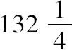
．11.将同一所要求的数加到两个给定的数，使其均为平方数．
（1）例如给定的两个数是2，3；所要求的数是x．
因此
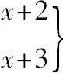
都必须是平方数．称此为双重方程（ 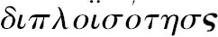
（a）较小的表示式为两因子的差的一半之平方，或
（b）较大的表示式为两因子的和的一半之平方．
在此题中（a）两因子的差的一半之平方是225/64．
所以x+2=225/4，且x=97/64，所要求的两个平方数是225/64，289/64．
若（b）两因子的和的一半之平方为较大的，则x+3=289/64，可以得出相同的结果．
（2）为了避免双重方程[5]，
首先，求一个数加上2和3，均是平方数．若设该数为x2-2，其加上2得一平方数．因其加上3也是一平方数，则不妨说
x2+1=平方数=（x-4）2，
此处表示式中选取4，是为了满足得出的解x2＞2．
因此x=15/8，所求的数是97/64，答案同上．
12.求一数使两个给定数减去它后，其差均为平方数．
给定两个数9，21．
假设9-x2为所求的数，则满足一个条件，另一个条件要求12+x2也为一个平方数．
假设平方根x减去一个平方大于12的数，例如4．
因此（x-4）2=12+x2，
得x=1/2，从而所求数为
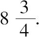
[丢番图没有化简分数，而是说x=4/8，并直接用9即576/64减去16/64．]
13.求一数使其分别减去两个数，差均为平方数．
给定数6，7．
（1）设x为所求数．
因此
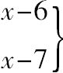
均为平方数．它们的差为1，同时1可分为2和1/2，通过解双重方程方法
x-7=9/16，和x=121/16．
（2）为了避免双重方程，寻找一个数比一个平方数大6，例如x2+6．
因此x2-1也一定是一个平方数，不妨=（x-2）2．
因此x=5/4，从而所求数为121/16．
14.把一个数分为两部分，求一个平方数使其分别加这两部分均为平方数．
例如给定一个数为20．
找两个数[6]，使它们的平方和小于20，例如2，3．
x分别加上它们并且平方．
得到
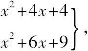
同时，若依次减去
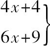
，其差是同一平方数．设x2为所求平方数，那么
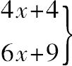
必须为20所分成的两个部分．因此 10x+13=20，
和 x=7/10．
从而所要求的两个部分为（68/10，132/10），所求平方数为49/100．
15.把一个数分为两部分，求一个平方数使其分别减去这两部分均为平方数．
例如给定一个数为20．
设（x+m）2为所求的平方数[7]，其中m2不大于20．
例如选取（x+2）2．
如果（x+2）2减去
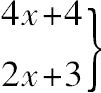
都是平方数，因此取两表达式的和为20．所以6x+7=20，且x=13/6．
因此所求两部分为（76/6，44/6），所求平方数为625/36．
16.按给定比例求两个数，使其分别加上一个指定的平方数其结果均为平方数．
例如 指定平方数9，给定比例为3：1．
设平方数的根为（mx+3），此平方数减去9，其差就可取为所求的数之一．
例如 取（x+3）2-9，即x2+6x为较小数．
因此3x2+18x为较大数，并且3x2+18x+9一定是一个平方数，不妨=（2x-3）2．
因此x=30，从而 所求数为1080，3240．
17.求三个数，每个数都将自己的某一给定分数倍加某一给定数给予下一个数，在获得和给予之后，要求三个结果均相等[8]．
例如第一个给第二个它的
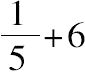
，第二个给第三个它的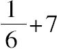
，第三个给第一个它的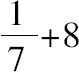
．且令第一，第二个依次为5x，6x．
第二个从第一个获得
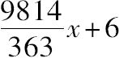
时成为7x+6，当它取出x+7给予第三个后，剩6x-1．而第一个给予第二个x+6后剩4x-6，当它获得第三个的
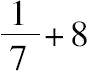
时也应是6x-1．因此，第三个的=2x+5，
即，第三个=14x-21
另外，第三个获得x+7并取走它的
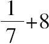
成为6x-1，从而13x-19=6x-1，即x=18/7．所求的数是90/7，108/7，105/7．
18.将一给定数分为三个部分，使其满足上一题的条件[9]．
例如给定数为80．
并且第一个给第二个它的
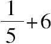
，第二个给第三个它的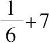
，第三个给第一个它的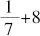
．[原著随后不是此题的解答，而是上一题的另一可替换解．其中前两数设为5x和12，所求数是170/19，228/19，217/19．]
19.求三个平方数使最大数与中间数之差和中间数与最小数之差成一给定比例．
例如给定比例为3：1．
设最小平方数=x2，中间数=x2+2x+1．
因此最大数=x2+8x+4=平方数，不妨说=（x+3）2．
因此 x=
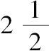
，从而得所求平方数为
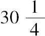
，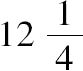
，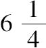
．20.求两个数使其平方分别加另外一个数均为平方数[10]．
设所求两个数为x，2x+1，其形式满足其中一个条件．
由另一条件得出
4x2+5x+1=平方数，不妨说=（2x-2）2
因此x=3/13，从而所求数为3/13，19/13．
21.求两个数使其平方分别减去另一个数均为平方数．
假设所求两个数为x+1，2x+1，其满足其中一个条件．
由另一个条件得出
4x2+3x=平方数，不妨说=9x2．
因此x=3/5，从而所求数为8/5，11/5．
22.求两个数使其平方分别加上此两数之和均为平方数．
假设所求数为x，x+1．则其中一个条件成立．
由另一个条件得出
x2+4x+2=平方数，不妨说=（x-2）2．
因此x=1/4，从而所求数为1/4，1/5．
[原著所求数为2/8，10/8]
23.求两个数使其平方分别减去此两数之和均为平方数．
假设所求数为x，x+1．则其中一个条件成立．
由另一个条件得出
x2-2x-1=平方数，不妨说=（x-3）2．
因此x=
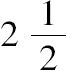
，从而所求数为，
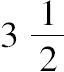
．24.求两个数使每一个分别加上此两数和的平方均为平方数．
因为x2+3x2，x2+8x2都是平方数，假设所求数为3x2，8x2，x为它们的和．
因此121x4=x2，从而11x2=x，即x=1/11．
所以所求数为3/121，8/121．
25.求两个数使他们和的平方分别减去这两个数均为平方数．
如果从16中减去7或12，可以得到一个平方数．
因此假设12x2，7x2为所求数，16x2为它们的和的平方．
因此19x2=4x，即x=4/19．
所求数为192/361，112/361．
26.求两个数使它们的积分别加这两个数均为平方数，且这两个平方数的根的和为一给定数．
设这个定数为6．
因为x（4x-1）+x是一个平方数，设x，4x-1为所求数．
因此4x2+3x-1是一个平方数，且其平方根一定是6-2x［因为2x是第一个平方数的根且这两个平方数的根的和为6］．
因为 4x2+3x-1=（6-2x）2，
得 x=37/27，从而
所求两个数为37/27，121/27．
27.求两个数使它们的乘积分别减去这两个数为一个平方数，且这两个平方数的平方根的和为一定数．
例如给定数为5．
设4x+1，x为所求数，有条件得
4x2-3x-1=（5-2x）2．
因此 x=26/17，从而得
所求两数为26/17，121/17．
28.求两个平方数使他们的乘积分别加上这两个平方数均为平方数．
设这两个平方数[11]为x2，y2．
因此
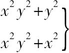
都是平方数．要使第一个表达式为平方数必须使x2+1为平方数，不妨说
x2+1=（x-2）2．
因此x=3/4，即x2=9/16．
而要使
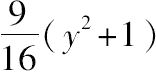
为平方数［且y不同于x］，不妨使 9y2+9=（3y-4）2，
即 y=7/24．
从而所求数为9/16，49/576．
29.求两个平方数，使它们的乘积分别减去这两平方数均为平方数．
设两个平方数为x2，y2．
因此都是平方数．
由x2-1=（平方数）得出一个解x2=25/16．
而要使
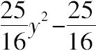
=平方数，不妨使y2-1=（y-4）2．
因此y=17/8，从而
所求数为289/64，100/64．
30.求两个数使它们的乘积加，减这两个数的和均为平方数．
因为m2+n2±2mn是一个平方数．
不妨分别取m，n为2，3．当然22+32±2·2·3是一个平方数．
然后假设所求数的乘积=（22+32）x=13x2，且
和=2·2·3x2=12x2．
既然乘积是13x2，可令这两个数为x，13x．
所以它们的和14x=12x2，且x=7/6．
因此所求数为
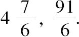
31.求两个数使它们的和是一个平方数，且它们的乘积加，减这两个数的和均为平方数．
2·2m·m=平方数，且（2m）2+m2±2·2m·m=平方数．
如果m=2， 42+22±2·4·2=36或4．
然后令所求数的乘积为（42+22）x2即20x2，且其和为2·4·2x2=16x2．
如果取这两数为2x，10x．
则12x212x=16x2，且x=3/4．
所求数为6/4，30/4．
32.求三个数，使其每一个的平方加下一个数，均为平方数．
令第一个数为x，第二个数为2x+1，第三个数为2（2x+1）+1=4x+3，则两个条件得到满足．
由最后一个条件得（4x+3）2+x=平方数，不妨说=（4x-4）2．
因此x=7/57，从而
所求数为7/57，71/57，199/57．
33.求三个数，使其每一个的平方减去一个数，均为平方数．
设所求数为x+1，2x+1，4x+1，则两个条件得到满足．
最后，16x2+7x=平方数，不妨说=25x2．
得 x=7/9．
所求数为16/9，23/9，37/9．
34.求三个数，使其每一个的平方加这三个数的和，均为平方数．
因为
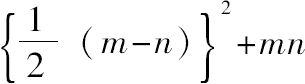
是一个平方数．任取一数，并以三种方式分解为两个因子（m，n），不妨说选取12，它是（1，12），（2，6），（3，4）的乘积．那么
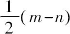
的值依次为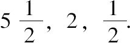
令所求三个数为
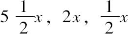
，且三数之和为12x2．则8x=12x2，且x=2/3．
所求数为11/3，4/3，1/3．
[原著答案为4/6，和22/6，8/6，2/6．]
35.求三个数，使其每一个的平方减这三个数的和，均为平方数．
因为
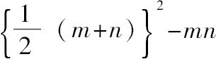
是一个平方数．同上题一样，任取一数，并以三种方式分解为两个因子（m，n），不妨说选取12．令所求三个数为
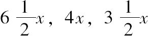
，且三数之和为12x2．则14x=12x2，且x=7/6．
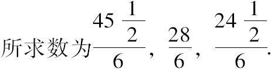
[1]正是针对这个问题费马写下了他的著名注释，以费马大定理著称于世，费马相信自己已经证明了这个定理，对m＞2，xm+ym=zm不可能有有理数解．注解原文如下：
“然而此外，一个立方数不能分解为两个立方数，一个四次方数不能分解为两个四次方数，一般地说除平方以外的任何次乘幂都不能分解为两个同次幂．我发现了这定理的一个真正奇妙的证明，但书上空白的地方太少，写不下．”
[2]在丢番图的原话中始终暗含着一种观点，m的值必须适当选取使解为正的有理数．
[3]丢番图的解法本质上同欧拉（Algebra，tr.Hewlett，Part II.Art.219）一样，但欧拉的表述更一般化符号化．
欲求x，y使 x2+y2=f2+g2．
如果x＞f则y＜g（如果x＜f则y＞g，类似）
因此设 x=f+pz， y=g-qz
于是 2fpz+p2z2-2gqz+q2z2=0
得
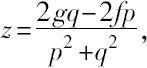
故
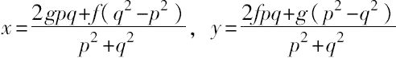
若用任何可能的数值替代p，q，本质上就是丢番图的方法．
[4]此处，丢番图同样要求因子的选取必须恰当，以便得到有理数解．
[5]此解法同欧拉一样，欧拉（Algebra，tr.Hewlett，Part Ⅱ.Art.214）没有用双—方程解了下题
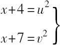
假设 x+4=p2；
那么 x=p2-4，和x+7=p2+3．
假设 p2+3=（p+q）2，
那么
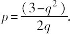
于是
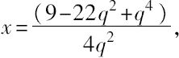
如果用分数r/s替代q，
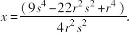
[6]丢番图指出所选两数平方和＜20．唐内里（Tannery，Bibliotbeca Mathematica，1887）订正过，为了得到正有理解所需的必要条件并非如此．对方程组分析如下：
x+y=a，z2+x=u2，z2+y=v2，
假设u=z+m，v=z+n，并消去x，y得
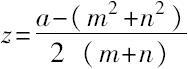
为了使z为正，必须让m2+n2＜a；但是满足上述方程组的z不必为正．真正需要的是x，y均需为正．
从上可以导出：
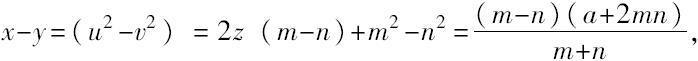
解出x，y，得
如果假设其中m＞n，使x，y均为正的必要条件便是a+mn＞m2．
[7]此处也一样，必要条件非m2不大于20，分析如下：
丢番图要解的方程组是
x+y=a，z2-x=u2，z2-y=v2，
他用（ξ+m）2替代z2，因此若x=2mξ+m2，则第二个方程成立；
现在（ξ+m）2-y也必须是平方数，不妨取其为（ξ+m-n）2，从而
y=2nξ+2mn-n2.
因为x+y=a，所以2（m+n）ξ+m2+2mn-n2=a，
从而
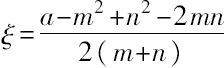
，且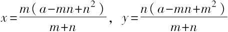
如果其中m＞n，使得x，y为正的必要条件是a+mn＞m2．这才是真正的限制条件．
[8]唐内里认为卷Ⅱ，17，18题是早期评注者对卷Ⅰ相关问题的延伸，确实这两题更适合卷Ⅰ．
[9]虽然此题缺解，但按照上一题的一般解法是容易算出的，可参照注释：
设所求的数是5x，6y，7z
根据题设条件，有
4x-6+z+8=5y-7+x+6=6z-8+y+7
可以用y表达式，求出x，z．
事实上，
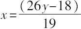
，且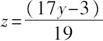
一般的解为
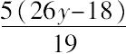
，6y，[在丢番图的解答中他设x=y，因此y=．]
现在我们来解卷Ⅱ，18题，另三个表达式之和为80，便可求出y．
有 y（5·26+6·19+7·17）-5·18-7·3=80·19，
所求的数是
[10]欧拉（Algebra，Part Ⅱ.Art.239）对此题的解法更一般：
所求的数x，y满足x2+y和y2+x都是平方数．
如果开始假设x2+y=p2，则y=p2-x2，在第二个表达式中用x替代y便有
p4-2p2x2+x4+x=平方数
但这难以解答，因此另作假设
x2+y=（p-x）2=p2-2px+x2，
且 y2+x=（q-y）2=q2-2qy+y2．
从而 y+2px=p2，
x+2qy=q2．
因此
例如，取p=2，q=3，便有，；等等．当然p，q的选取应满足x，y都是正的．令p=-1，q=3可以得出丢番图的解．
[11]丢番图没有同时使用两个未知数．而是令x2+1为平方数，解出x．然后，求下一个平方数时仍使用相同的未知数符号（x）．下一问题相同．